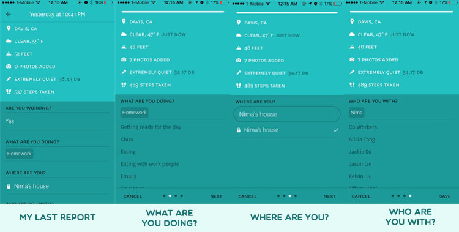

Some guidance: “Kelvin, could you try and create a log for me?”
- "I assume that this is what this report button is for."
- In the ‘what are you doing screen’, he tries to type “working” but the app autocorrects to “workout”
- “How do I get rid of it? Oh! It’s a toggle… I’m just going to assume that this means off and this means on”
- In the ‘who are you with’ screen’, he says “These textfields aren’t very responsive” and sees the x on the far right. —> “Oh! — this is what the X is for”
General comments
- "The main screen doesn’t need to have statistics because most of the time while I’m opening up the app, i’d be there to make a report”. It would be nice to have if I were to show a friend though. It would be right there”
- “If I were a first time user, I would have no idea what the awake toggle would do”
- “This reminds me of AprilZero. He does something similar but with things like Fitbit tracking things for him.”
Step 2: Brainstorm User Needs
- Needs a way to access the nav when there are other notifications on the phone covering the main navigational elements.
- Needs a bigger call to action on the home screen for reporting
- Needs a way to specify which elements are interactive and which are not
- Needs an explanation for the awake and asleep toggle
- Needs a way to delete entries individually without deleting the entire input
- Needs a way to account for subjective preference and record it for future use
- Needs a way to separate functionality and “coolness”, or separating for the reporting and separating overarching data visuals”
- Finding a way to make sure that the user knows about autofill, or the textfields will seem unresponsive for no particular reason.
- Needs some sort of explanation element and instructional tour beyond the loading screen explaining what the app is about and what it does.
- Needs a reasonable amount of customization, because everyone’s needs are different
- Needs something that’s actionable afterwards